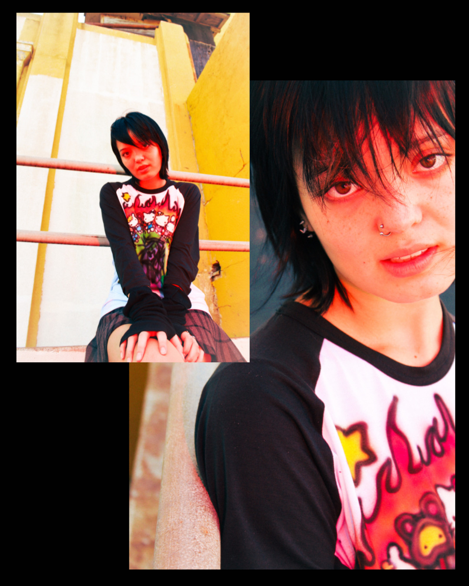
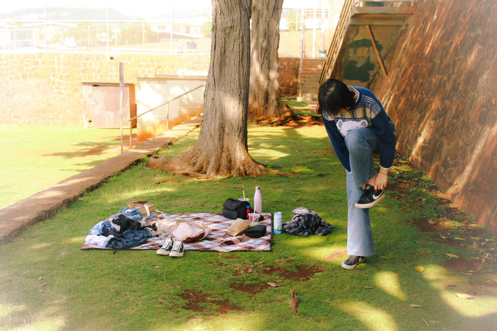
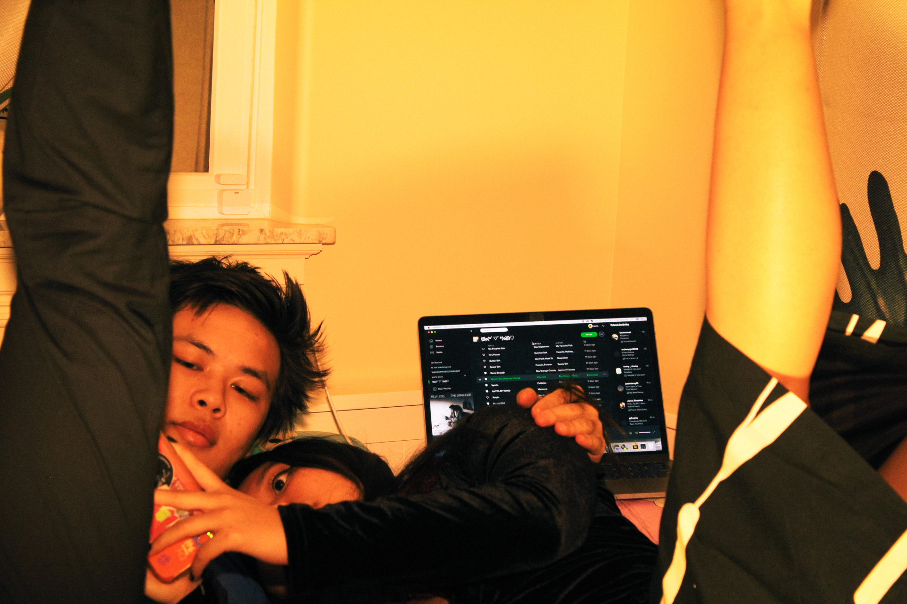
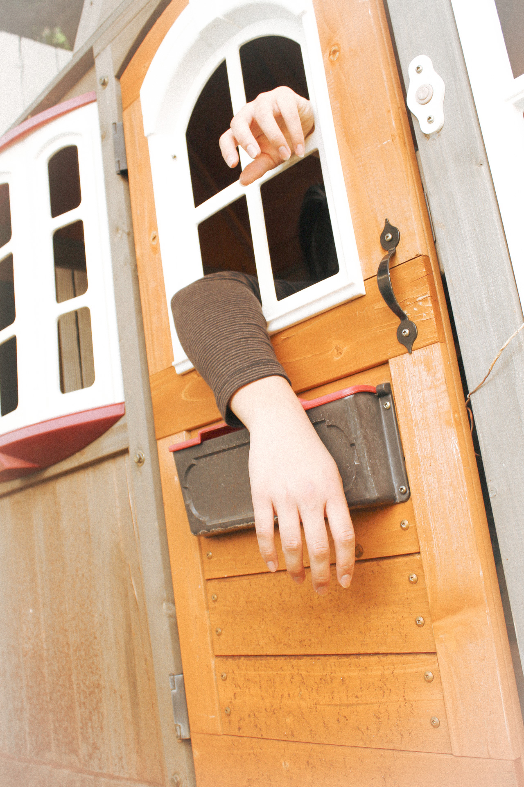
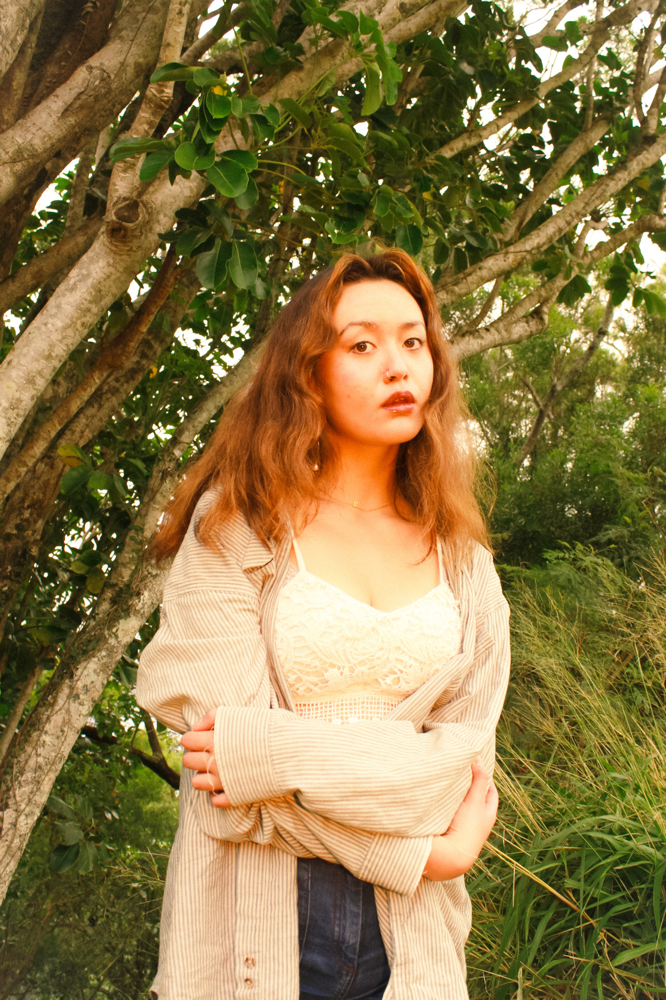
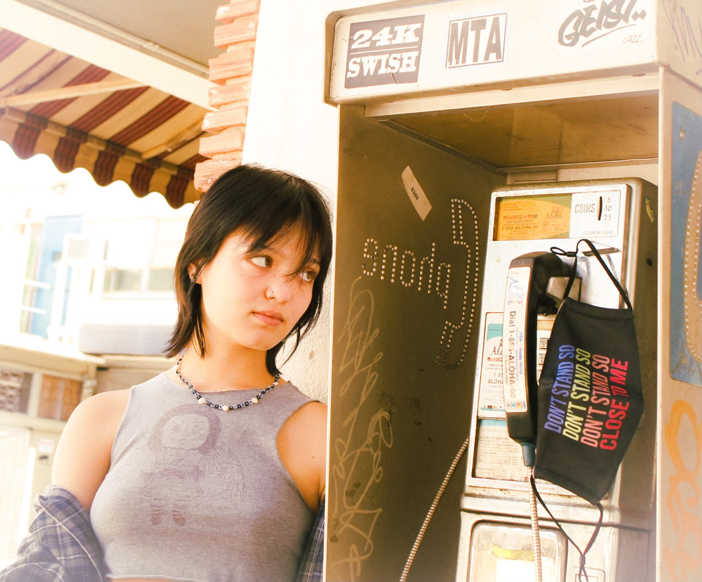
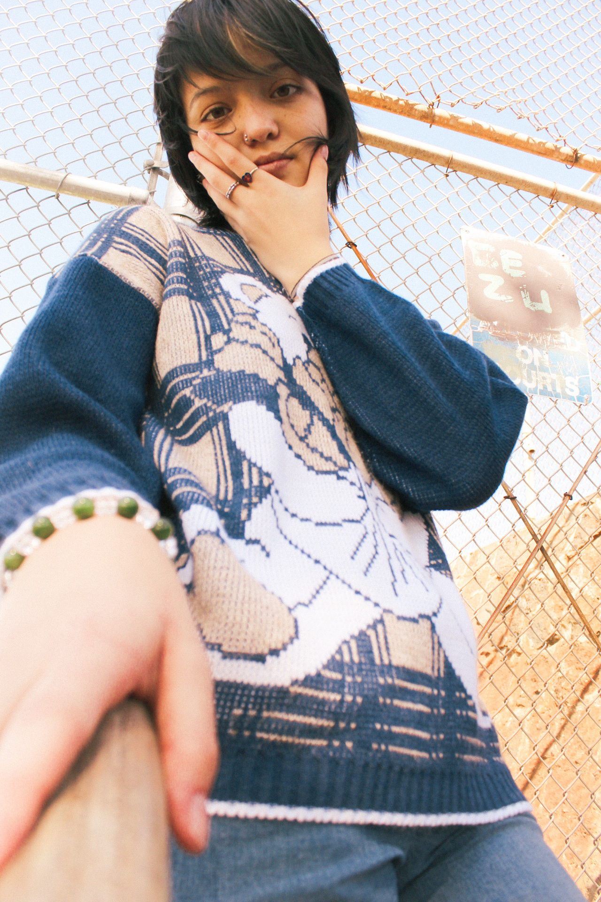
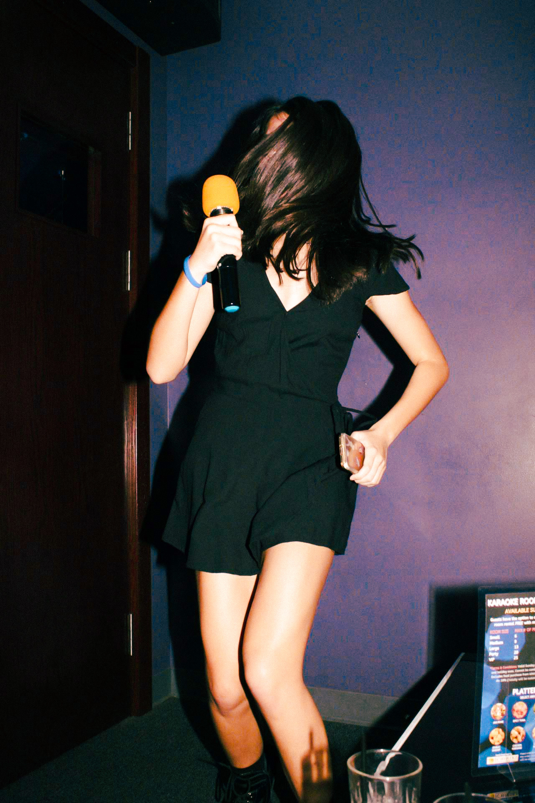

"remembering is always about some degree of forgetting"
reminiscence
Being a very nostalgic person, "memory boxes" filled with childhood drawings, trinkets, photos with friends, along with stacks of half-filled notebooks from various time periods of my life constantly surround me. I cycle through Art in countless mediums, yet photography is one of the few that have stuck with me and never left. Reliving stories and telling new ones through this medium is so important to me.







